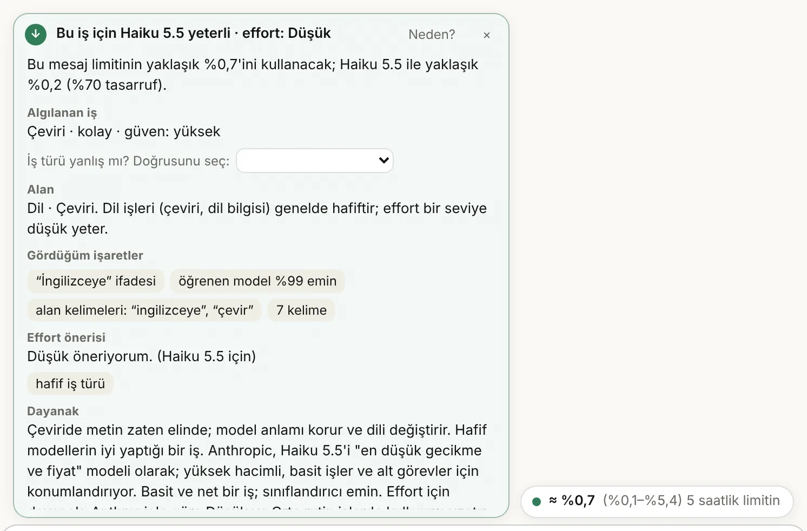
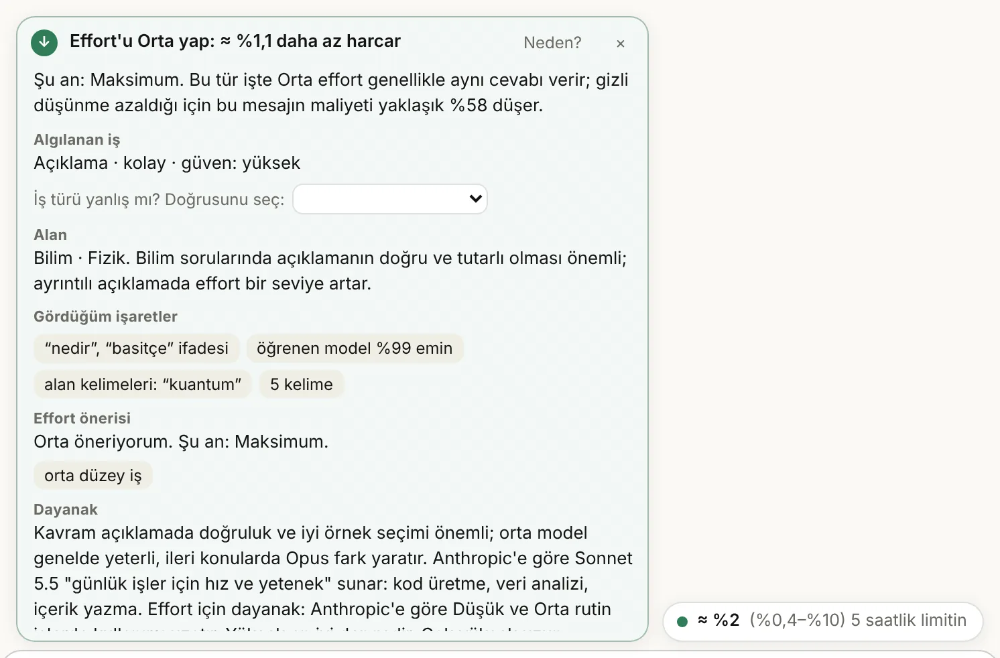
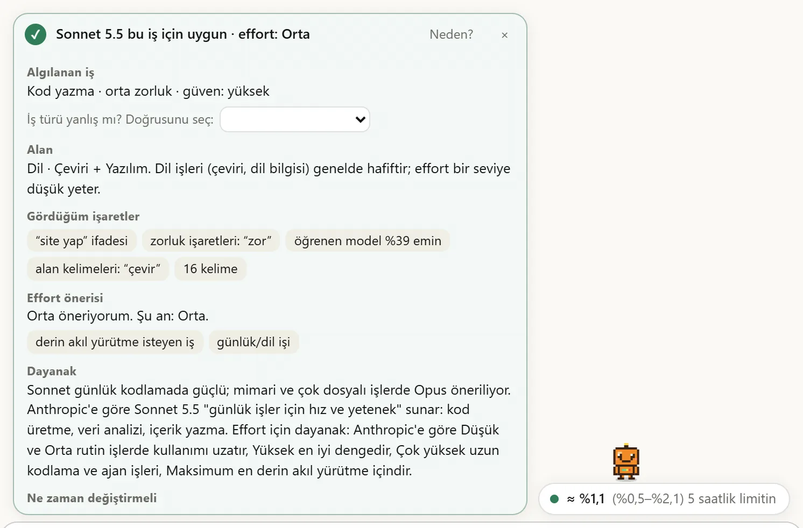
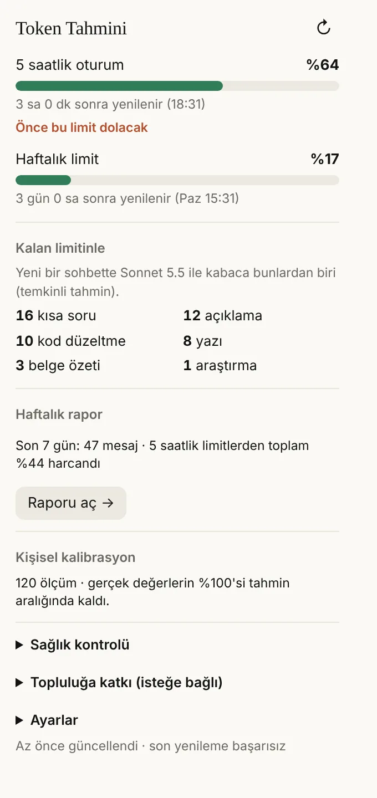
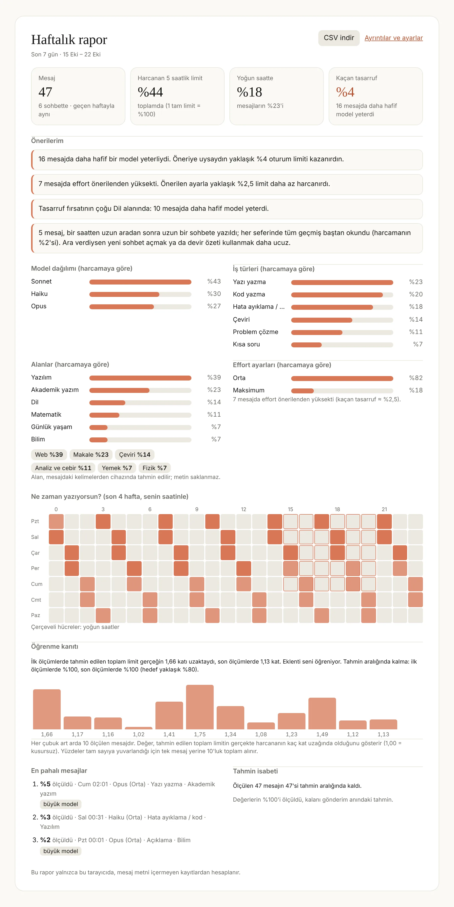

Haiku 5.5
0,25 katSonnet'e göre
En düşük gecikme ve fiyat. Çeviri, yazım düzeltme, kısa özet, tek cevaplı sorular.
Eklenti yalnızca açıkça basit ve emin olduğu işlerde önerir.
Claude kullanım limiti için ücretsiz tarayıcı eklentisi
Token Tahmini, yazdığın mesajın 5 saatlik ve haftalık Claude limitinin ne kadarını harcayacağını gönder tuşuna basmadan söyler. Hangi modelin ve hangi effort ayarının yeteceğini de gerekçesiyle gösterir; zamanla senin planından öğrenir.
EKSİK OLAN
claude.ai'de kullanımını görmek için Ayarlar → Kullanım sayfasına gitmen gerekiyor ve orası yalnızca şimdiye kadar ne harcadığını söylüyor. Limit çoğu zaman tam bir işin ortasında, beklenmedik bir mesajda bitiyor. Token Tahmini bunu sohbetin içine taşıyor ve bir adım öne geçiyor: mesajı göndermeden önce.
| Özellik | Ayarlar → Kullanım | Kullanım sayaçları* | Token Tahmini |
|---|---|---|---|
| 5 saatlik ve haftalık yüzde, yenilenme saati | ✓ | ✓ | ✓ |
| Sohbetin içinde, mesaj kutusunun yanında | – | ✓ | ✓ |
| Bu mesaj göndermeden önce ne kadar harcar | – | – | ✓ |
| Hangi model yeter, neden (gerekçeli öneri) | – | – | ✓ |
| Sohbet ortasında model değiştirmenin gizli maliyeti | – | – | ✓ |
| Kalan limitle kabaca kaç iş yapılır | – | – | ✓ |
| Senin planından ve alışkanlıklarından öğrenir | – | – | ✓ |
| “Bu mesaj neden bu kadar harcadı?” açıklaması | – | – | ✓ |
| Haftalık rapor, saat haritası ve kişisel öneriler | – | kısmen | ✓ |
| Önbellek ve yoğun saat geri sayımı | – | kısmen | ✓ |
* Ekim 2026'da sayfalarını incelediğimiz sekiz kullanım eklentisinin hiçbiri göndermeden önce mesaj başına tahmin ya da gerekçeli model önerisi sunmuyor; hepsi kullanımı gönderdikten sonra gösteriyor. Birinde önbellek, birinde yoğun saat geri sayımı, birinde ısı haritası var.
NE YAPIYOR
Hepsi tarayıcında çalışır. Yeni sürümde eklenenler işaretli.
Yazarken 5 saatlik ve haftalık limitin ne kadarının gideceğini %80 aralıkla gösterir. Ekleri, sohbet geçmişini, modeli ve düşünme ayarını hesaba katar.
Hangi modelin yeteceğini, neye baktığını ve ne kadar kazandıracağını söyler. Emin değilse hafif model önermez.
Maliyetin ne kadarı cevaptan, düşünmeden, geçmişten ve eklerden geliyor; kartta tek bakışta.
Sohbet geçmişinin kaç dakika daha ücretsiz okunacağını ve yoğun saatin ne zaman biteceğini gösterir.
Son bir saatteki hızına bakıp 5 saatlik limitin yenilenmeden önce dolup dolmayacağını söyler.
Sohbet çok uzadığında, yeni sohbete taşımak için Claude'dan kısa özet isteyen hazır metni tek tıkla kopyalar.
Bir mesaj tahminin çok üstünde yerse sebebini söyler: uzun aradan sonra baştan okunan geçmiş, yoğun saat, uzun cevap ya da başka bir cihazda kullanım.
Mesaj sayısı, harcanan limit, yoğun saat payı, model ve iş dağılımı, saat haritası ve sana özel öneriler. Pazartesi sabahı bildirim, CSV dışa aktarma.
İş türünü kurallar ve küçük bir öğrenen modelle birlikte tanır. Yanlışı düzelttiğinde bunu cihazında öğrenir.
Her mesajdan sonra limitinin gerçekte nasıl değiştiğini ölçer; planının büyüklüğünü ve Claude'un sana verdiği cevap uzunluklarını öğrenir.
Mesajın konusunu 16 alan ve alt başlıkta (Bilim · Fizik, Mühendislik · Elektrik…) yaklaşık 2.600 anahtar kelimeyle tanır. Sağlık, hukuk ve para sorularında hafif model önermez.
Düşük'ten Maksimum'a: bu iş için hangi effort yeter, şu anki ayar fazlaysa ne kadar limit kurtarırsın. Modelin varsayılanını ve Çok yüksek seviyesini bilir.
“Çeviri sistemi olan bir site yaptıracağım” cümlesi çeviri değil, yapım işidir. Eklenti bunu ayırt eder ve Haiku önermez.
Hapı sürükleyip istediğin yere koy. claude.ai'nin effort ya da model menüsü açılınca kendiliğinden çekilir; Alt + ok tuşlarıyla da taşınır.
Raporda, kendi ölçümlerinden tahmin hatasının zamanla düşüp düşmediğini görürsün. Düşmüyorsa bunu da söyler.
EKLENTİDE
Mesaj kutusunun üstünde küçük bir hap ve gerekçeli öneri bildirimi; araç çubuğunda limitlerin, kalan limitle yapılabilecekler ve öğrenme durumu.
▶ Ayrıntılı tanıtım videosu (YouTube, 4 dk)





NASIL ÇALIŞIR
Anthropic limitlerin tam büyüklüğünü yayımlamıyor. Bu yüzden eklenti bir başlangıç tahminiyle açılır ve her mesajda gerçek kullanım yüzdesinin önce ve sonra nasıl değiştiğini ölçerek kendini düzeltir.
MODEL ÖNERİSİ
Hafif model önermek, pahalı model önermekten daha kötü bir hatadır: kötü cevap, tekrar sorman demek. Eklenti Haiku'yu yalnızca açıkça basit ve emin olduğu işlerde önerir; emin değilse en az Sonnet der. Dayanağı Anthropic'in model seçme rehberi, 60 örnekli öneri test seti (uygunluk %100, gerekenden hafif öneri 0) ve cihazda çalışan öğrenen model.
En düşük gecikme ve fiyat. Çeviri, yazım düzeltme, kısa özet, tek cevaplı sorular.
Eklenti yalnızca açıkça basit ve emin olduğu işlerde önerir.
Günlük işler için hız ve yetenek: kod, veri analizi, yazı, açıklama.
Çoğu iş için varsayılan öneri; emin olmadığında güvenli taraf.
Karmaşık kodlama ve kurumsal işler: büyük refactor, sistem tasarımı, uzun ajan işleri.
Zorluk işaretleri (kanıtla, mimari, kapsamlı…) yüksek olduğunda.
En yüksek yetenek: saatler süren ajan işleri, çok adımlı derin araştırma.
Yalnızca çok zor türetme, tasarım ve araştırmalarda.
Göreli maliyet: API fiyatıyla orantılı varsayılır ve kalibrasyonla düzeltilir. claude.ai'de sistem talimatı ve hafıza bağlamı 100K tokenın üstüne çıkardığı için Haiku'nun uzun bağlam fiyatı geçerlidir. Uzun bir sohbette model değiştirmek, geçmişin yeni modelde baştan okunması demektir; eklenti bu durumda “bir sonraki yeni sohbette seç” der.
KONU VE EFFORT
İş türünden ayrı ikinci bir eksen: mesajın konusunu 16 alan ve alt başlıkta tanır (cihazda, anahtar kelimeyle). Sağlık, hukuk ve para sorularında hafif model önermez ve effort'u en az Orta tutar. Bilim, matematik ve mühendislikte açıklamalarda effort'u bir seviye artırır. Şiir ve öyküde uzun düşünme kaliteyi pek artırmadığı için effort'u en fazla Orta bırakır.
kuantum · hücre · tepkime · galaksi · deney
türev · ispat · matris · olasılık · integral
devre · Arduino · gerilim · statik · PID
hata · API · React · Python · sunucu
veri seti · LLM · sınıflandırma · regresyon
makale · tez · atıf · hakem · özet
yol haritası · kilometre taşı · sprint · görev
şiir · öykü · roman · karakter · diyalog
müşteri · pazarlama · mülakat · CV · teklif
yatırım · kredi · vergi · enflasyon · bütçe
sözleşme · kira · dava · tüketici hakları · KVKK
ilaç · belirti · egzersiz · beslenme · uyku
sınav · ödev · ders çalışma · öğretmen · quiz
çeviri · gramer · kelime · İngilizce · telaffuz
tarih · felsefe · sosyoloji · psikoloji · savaş
yemek tarifi · gezi · ev · hobi · alışveriş
Anahtar kelimeler her alan için kısaltılmış örneklerdir. Alanı bulamazsa “Genel” der ve öneri değişmez.
Dayanak: Anthropic'in effort belgesi ve destek makalesi. Düşünme maliyeti oranları (cevabın görünen uzunluğuna göre) eklentinin varsayımıdır ve kendi ölçümünle düzelir. Önerilen effort'un cevap kalitesini koruyup korumadığı ölçülmedi.
YAPAY ÖĞRENME
Mesajın ne tür bir iş olduğunu anlamak tahminin ve model önerisinin temelidir. Eski sürüm yalnızca kurallarla tanıyordu. Yeni sürümde kuralların puanları, cihazda çalışan küçük bir öğrenen modele girdi oluyor. Model 128 KB, internete bağlanmıyor, bir tuş vuruşunda çalışıyor.
İş türünü doğru tanıma: kurallar → kurallar + model. Hiç bakılmadan yazılmış 120 gündelik mesajda (aksansız, selamlı, yazım hatalı).
Tehlikeli hata: zor bir işi (kod, matematik, araştırma) basit iş sanmak. İki test setinde, 240 mesaj.
Gerçekten basit işlerde doğru Haiku önerisi. Yanlış Haiku önerisi 0 → 1 (“2350'nin %17'si”).
Dürüst not: eğitim ve test mesajlarını da proje yazdı; gerçek kullanıcı mesajlarıyla doğruluk henüz ölçülmedi. Topluluk katkısı tam olarak bunun için. Cevap kalitesi (Haiku gerçekten yeterli miydi?) ölçülmedi.
KANIT
Gizli gerçek değerleri olan 200 yapay kullanıcı (her biri 120 mesaj) ve eklentinin gerçek tahmin ve kalibrasyon kodu. Her mesajda önce tahmin edilir, sonra gerçek görülüp öğrenilir. Aynı mesaj akışında öğrenmeyen bir kopya ve gerçek değerleri bilen kusursuz bir tahminci de çalışır.
Blok toplamı hatası: ilk 3 mesaj → son 40 mesaj. Öğrenmeyen kopya 2,1–2,2× civarında kalıyor.
%80'lik tahmin aralığı gerçeği yaklaşık %79 kapsıyor (hedef %80). Aralıklar ne fazla dar ne fazla geniş.
Tek mesaj hatası: öğrenen / kusursuz bilgili taban. Kalan hata cevap uzunluğunun rastgeleliğidir; öğrenmeyle düzelmez.
DOĞA
Her Claude cevabı, elektrik harcayan ve soğutmak için su kullanan veri merkezlerinde üretilir. Basit bir iş için en güçlü modeli ve en yüksek effort'u seçmek, gerekenden fazla işlem demek. Testlerimizde önerilere uyunca harcanan işlem gücü ≈ %40 azaldı.
Önerilere uyunca daha az işlem gücü; 240 örnek mesajda (%38 ile %50 arası).
Haftalık enerji tasarrufu, 1 milyon kişi haftada 100'er mesaj yazsa. Yüzlerce evin bir haftalık elektriği.
Haftalık su tasarrufu, aynı senaryoda. 100 ton, 50.000 kişinin bir günlük içme suyu.
Bunlar tahmin. Varsayım: mesaj başına ≈ 400 token'lık cevap, token başına 0,6–3 mWh enerji (mesaj başına 0,24–1,2 Wh) ve kWh başına 3,6–5,3 L su (mesaj başına ≈ 0,9–6 mL; veri merkezi soğutması ve elektrik üretimi birlikte). Kaynaklar: Epoch AI 2025, Jegham ve ark. 2025, Li ve ark. 2023, Google'ın Gemini ölçümü (Ağustos 2025: medyan istem 0,24 Wh). Uzun ve düşünmeli mesajlar daha fazla harcar. Anthropic, Claude için bu rakamları yayımlamıyor. Tek kişi için: haftada ≈ 10–50 Wh, yani 9 W'lık bir LED ampulü 1–5 saat yakacak kadar.
TOPLULUK
Anthropic limitlerin büyüklüğünü yayımlamıyor; her kullanıcı kendi planını ölçerek öğreniyor. Bu ölçümleri birleştirirsek yeni gelen biri ilk mesajından isabetli tahmin alır. Hiçbir şey kendiliğinden gönderilmez.
GİZLİLİK
Eklentinin sunucusu yok. Mesajların, eklerin ve sohbetlerin cihazından çıkmaz; hiçbir analitik ya da izleme yok. Yalnızca claude.ai'de, senin oturumunla çalışır.
claude.ai adresi.KURULUM
Chrome Web Mağazası'ndan tek tıkla kurulur; Edge ve Brave'de de aynı sayfadan, Opera'da “Install Chrome Extensions” eklentisiyle. Elle kurmak istersen adımlar aşağıda.
manifest.json olan bir klasör oluşur.chrome://extensions (Opera: opera://extensions) yaz, Geliştirici modu'nu aç.Eski sürümü kaldırmadan önce eklenti penceresinde Ayarlar → Verimi dışa aktar. Yenisini kurunca Verimi içe aktar ile geri yükle.
Pencerede Sağlık kontrolü her adımın durumunu gösterir. Günlüğü kopyala ile hata bildirirken ekle; günlükte mesaj metni yoktur.
SINIRLAMALAR
SIK SORULANLAR
claude.ai'de iki limit var: 5 saatlik oturum limiti ve haftalık limit. Anthropic kesin büyüklüklerini yayımlamıyor; ne kadarını kullandığını ve ne zaman yenileneceğini Ayarlar → Kullanım sayfası gösterir. Token Tahmini aynı yüzdeyi sohbetin içinde gösterir ve bir mesajın bu limitten ne kadar harcayacağını göndermeden önce tahmin eder.
Evet. Yazdığın mesajın, eklerin ve sohbet geçmişinin token sayısını tarayıcında hesaplar; yukarıdaki demoda “GİRDİ → CEVAP” satırında görürsün. Claude'un tokenizer'ı herkese açık olmadığı için bu sayı bir tahmindir ve dile göre ayarlanmıştır. Asıl işi, bu tokenların limitinin yüzde kaçına denk geldiğini söylemektir.
Hayır. Hesap açmak da gerekmiyor.
Token saymak için mesaj kutusundaki metni tarayıcında okur ama hiçbir yere göndermez. Eklentinin sunucusu yok; analitik ya da izleme yok. Haftalık rapor ve öğrenilen değerler mesaj metni içermez.
İlk mesajlarda aralık geniştir, çünkü limit büyüklükleri başlangıçta kaba tahmindir. Eklenti her mesajda ölçerek daralır; simülasyonda tahmin hatası 20 mesajda 1,13 kata, 100 mesajda 1,08 kata iniyor. Pencerede kaç ölçümün aralığa düştüğünü görebilirsin.
Ayarlar → Kullanım şimdiye kadar ne harcadığını gösterir. Token Tahmini göndermeden önce bu mesajın ne kadar harcayacağını, hangi modelin yeteceğini ve neden bu kadar harcandığını söyler.
Anthropic'in resmî bir aracı değildir. claude.ai'nin kendi sayfalarının kullandığı kullanım verisini senin oturumunla okur; mesaj göndermez, ayarlarını değiştirmez, hiçbir işlemi otomatikleştirmez.
Chrome, Opera, Edge ve Brave (Chromium tabanlı, sürüm 116 ve üstü). Firefox sürümü yol haritasında.
Evet. Kod GNU AGPL-3.0 lisansıyla açık: okuyabilir, çalıştırabilir, değiştirebilir ve paylaşabilirsin. Değiştirilmiş bir sürüm dağıtırsan, onu da aynı lisansla ve kaynak koduyla yayımlamalı, telif bildirimini korumalısın. “Token Tahmini / Token Forecast” adı ve logosu lisansa dahil değildir; değiştirilmiş sürümler başka bir ad kullanmalıdır.
Eklenti kelimeye değil işe bakar. “Şunu çevir: …” bir çeviri isteğidir ve Haiku yeter. “Çeviri sistemi olan bir site yaptıracağım” bir yapım işidir ve en az Sonnet önerilir. Bunun için 15 tuzak cümle ve gerçek çeviri istekleri otomatik testte.
Eklenti penceresi → Haftalık rapor → Öğrenme kanıtı. 30 ölçümden sonra ilk ölçümlerle son ölçümlerin hatasını karşılaştırır, düşmediyse bunu da yazar. Yapay kullanıcılarla yaptığımız deney yukarıdaki Kanıt bölümünde.
Eklentinin ve bu sitenin arayüzü Türkçe, İngilizce, Almanca, Fransızca, İspanyolca, İtalyanca, Portekizce, Rusça, Japonca ve Çince olarak gelir; dil ayarlardan seçilir. Mesaj analizi (iş türü, konu alanı, model ve effort önerisi) yalnızca Türkçe ve İngilizce mesajlarda yapılır. Başka bir dilde yazarsan token ve limit tahmini yine çalışır, öneri gösterilmez ve eklenti bunu sana söyler. Tanıtım videosu ve ekran görüntüleri Türkçe ve İngilizcedir; diğer diller İngilizce olanı görür.
YOL HARİTASI
Token Tahmini ücretsiz kalacak. Geliştirmeye devam etmesine katkı istersen: